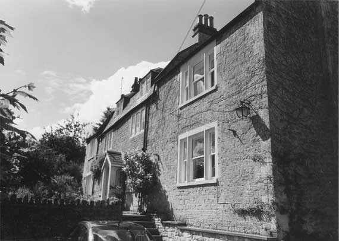

Type of building:
Detached village house
Listing:
Grade ll
Plan and elevation:
Complex - central block originally two unit and single pile but now double
pile in part and on two-storeys with attics. North wing single unit and single
pile on two-storeys. South wing originally the same but now two unit and double
pile on two-storeys. From the front elevation the central block and the two wings
follow the same building line on a site that slopes both north-south and east-west
Summary of the probable main building
history:
Central block early- mid 18th Century with two wings added about 1870 and further
rear extensions early 20th Century

East elevation
Exterior:
A) Central block. Front (east) elevation - constructed of coursed rubble stone
with chamfered freestone dressings to the windows and the door. The ground floor
has two three-light windows with chamfered mullions, sills and sash windows with
horns. Both windows are modern and, on the evidence of straight joints and the
infilling of cut stone blocks immediately below the windows, replace doors. There
are also two three-light chamfered mullion casement windows on the first floor
level. These are without sills and show signs of repair; they are probably original
to the house. There are two attic hipped dormers each fitted with a four-pane
swivel window either side of a central mullion. Some of the panes of these windows
are of cylinder glass. Quoins mark each end of the central block. The roof is
slated and of gambrel design with a coped raised verge and an ashlar stack at
each gable end. The principal entry is slightly off-centred, has a dressed stone
surround and fitted with a four-panelled fielded door (modern). A moulded stone
porch under a pitched slated roof decorated with barge boarding is a later addition.
To the rear and on the northern end of the central block a part rubble and part ashlar extension projects under a cat-slide roof. Butted to this is another single storey rubble built extension, again under a cat slide roof. There is also evidence of a further and former extension on the southern end of the rear wall, which was also under a cat-slide roof. This has been demolished to leave an open courtyard where it used to stand - and a chamfered stone fireplace to look out into the courtyard.
B) The wings - constructed to match the central block at the front elevation with coursed squared rubble stone. Each wing has one ground floor and one first floor three-light chamfered mullion window, with a sill and fitted sash with horns. The south wing has a relieving arch over its ground floor window. The north wing, built on lower ground, has a sub-cellar under. Both wings have pitched roofs with gable end ashlar stacks.
There is a rubble built extension to the rear of the south wing. This has been bonded in to the south wing, the pitched roof of which has been extended to accommodate the extension under the same cover. This necessitated some disturbance to the wing’s gable end with some variation in the stonework.
Interior:
This has been subject to substantial renovation and some alteration. Thus the
staircase has been rebuilt, the hall partitioning has been removed, the living
room fireplace rebuilt and its positioning changed (from left of centre to centre
of the north wall) and flagstones laid in the hall-reception area. Nevertheless,
the plan has not been disturbed. The central block is of most interest being the
original two unit and single pile house with a cross entry. Some walls retain
their battering (about 70cms thick on the ground floor). Some ceiling beams are
chamfered with cyma (lambs tongue) stops. There are window seats on the first
floor and the attic mullions are ogee moulded. The roof (repaired in places) consists
of common rafters clasping a diagonally set ridge piece.
Date and development:
The plan of the central block is very traditional, as are many features like the
mullions and the beams. The gambrel roof is “modern” in comparison.
In all probability, the house, consisting of the central block only, is transitional
in design, from the vernacular towards the pattern book. So an early to mid 18th
Century date is suggested for its construction. The two wings are dateable from
the title deeds in the owners possession, about 1870. The extensions are later,
into the 20th Century. Some of the more modern work on the property was done by
a local builder who has left his inscription on it.
Reference Pictures
Main
entrance |
View from road |
End
of east elevation |
Survey Drawings
Ground
Plan |
Cellar Plan |
Section |